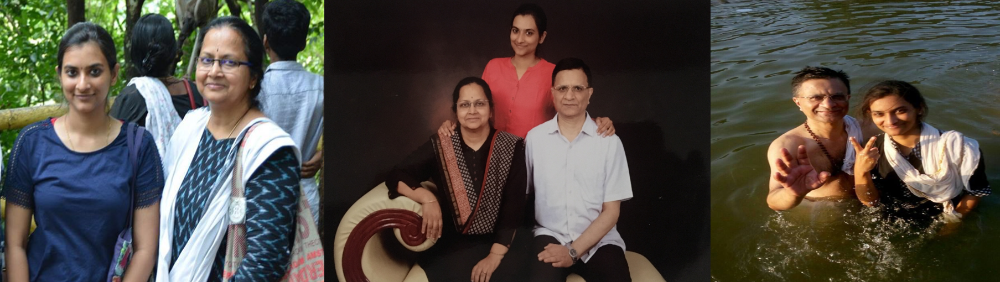
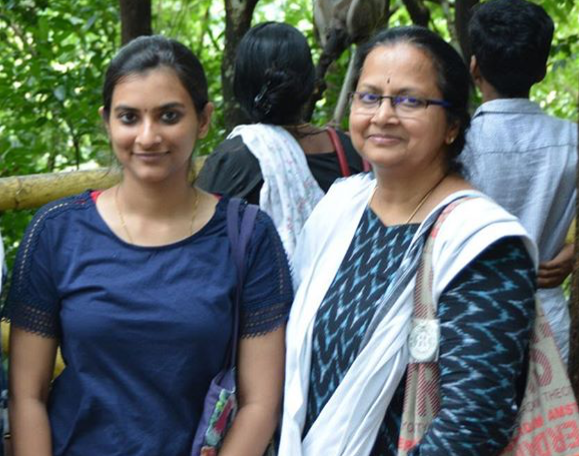
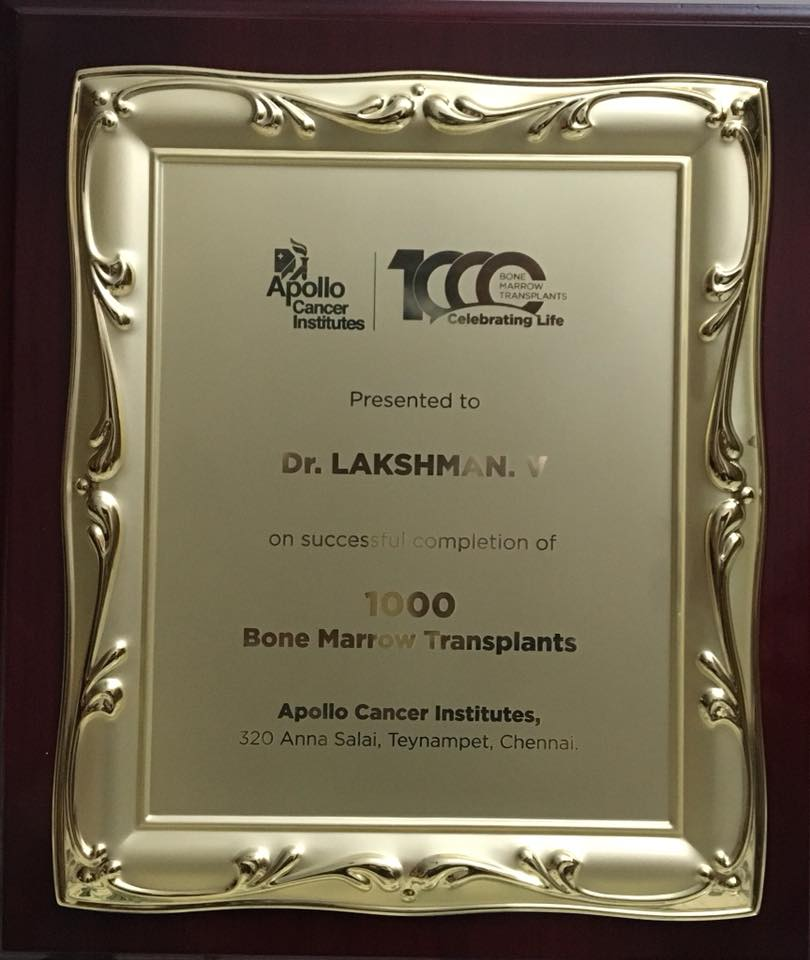

Anandhi Lakshman.
My mom has been my greatest source of strength. She has instilled good thoughts, values and morals by making me understand
the importance and the righteousness that comes with those. My mom is an Engineer too and has been an IT industry veteran
for 30 years. She was part of Siemens when her career started and moved into IT by joining
Sundaram Infotech Solutions. She steadily progressed to become the Head of South Asia, managing pre-sales, and
delivery of ERP solutions at an organisation called All e Technologies.
She is now working as a freelance consultant. She loves carnatic music and enjoys listening to youngsters and
popular artists like Abhishek Raghuram.

Dr. V. Lakshman
I couldn't find a better picture to describe my dad. My dad is a Haematologist (studies and treats
blood-related issues). He has been working at Apollo Speciality Hospital for the past 25 years. He
was recently awarded for saving 1000 lives through Bone-Marrow Transplant (BMT). He is a regular blood donor
and enjoys visiting temples and praying.